Nummers
Op deze pagina brengen we een eerbetoon aan de invloedrijke hiphopkunstenaar Nas door zijn 50 meest opmerkelijke en beste nummers in de schijnwerpers te zetten. Met een carrière die zich uitstrekt over meerdere decennia, heeft Nas een blijvende stempel gedrukt op de wereld van de rapmuziek. Zijn lyrische genialiteit en vermogen om verhalen te vertellen hebben hem tot een icoon gemaakt in de hiphopgemeenschap. Van tijdloze klassiekers zoals "N.Y. State of Mind" tot emotioneel geladen tracks zoals "One Mic," elke song belichaamt de essentie van Nas' kunst en zijn impact op de muziekwereld. Laten we deze reis door Nas' muzikale erfenis beginnen en ontdekken waarom hij wordt beschouwd als een van de grootste rappers aller tijden.
- NY State of Mind 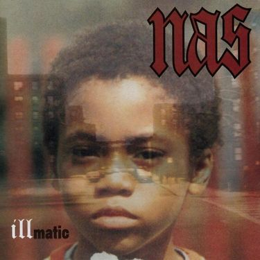
- One Love
- If I Ruled the World (Imagine That) (ft. Lauryn Hill) 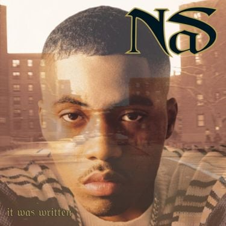
- Hate Me Now (ft. Puff Daddy) 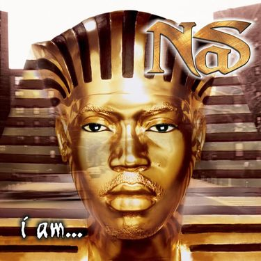
- Wavegods (ft. A$AP Rocky) 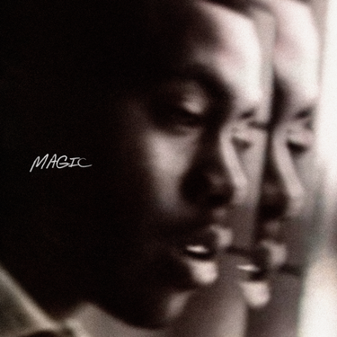
- Nas Is Like
- The World Is Yours
- Made You Look 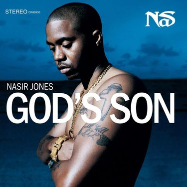
- I Can
- Nas Is Coming (ft. Dr. Dre)
- Street Dreams
- The Message
- Life's a Bitch (ft. AZ)
- It Ain't Hard to Tell
- I Gave You Power
- Black Republican (ft. Jay-Z) 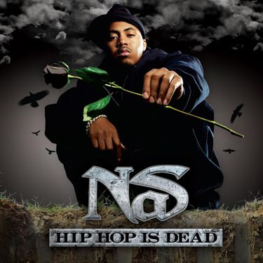
- One Mic 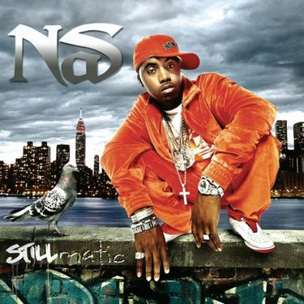
- Daughters 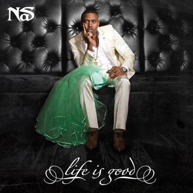
- N.Y. State of Mind Pt. II
- The Don
- Purple 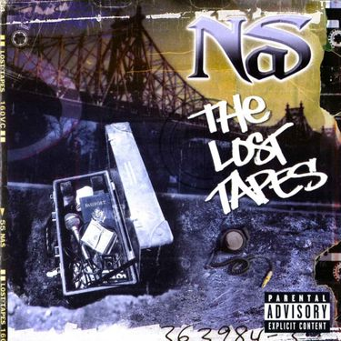
- Nas Is Like
- Cherry Wine (ft. Amy Winehouse)
- Bye Baby
- Accident Murderers (ft. Rick Ross)
- Represent
- Ether
- Queens Get the Money 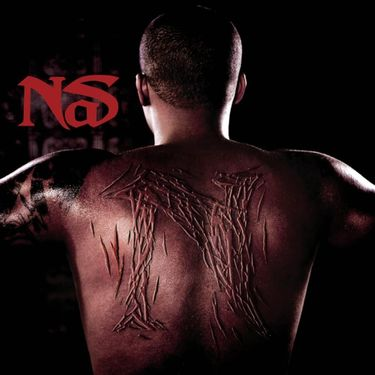
- Superhero Status
- Hero (ft. Keri Hilson)
- Got Ur Self a...
- No Introduction
- Surviving the times 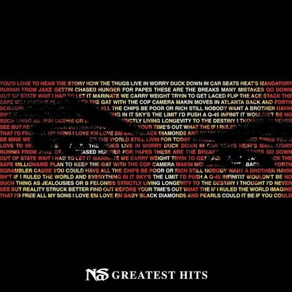
- Loco-Motive (ft. Large Professor)
- 30 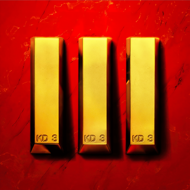
- Halftime
- Made You Look (Remix ft. Jadakiss & Ludacris)
- The Flyest (ft. AZ)
- One Mic, One Gun (ft. 21 Savage) 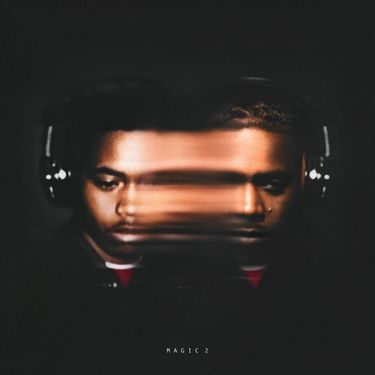
- Thugz Mansion (Nas Acoustic) (ft. 2Pac)
- The Black Bond
- Fried Chicken (ft. Busta Rhymes)
- Let There Be Light (ft. Tre Williams)
- Adam and Eve (ft. The-Dream) 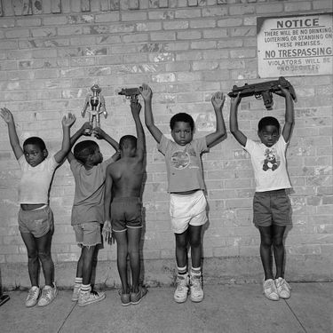
- Nas Album Done (ft. DJ Khaled) 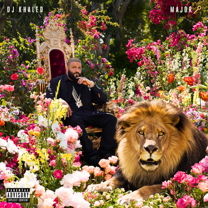
- Patience (ft. Damian Marley) 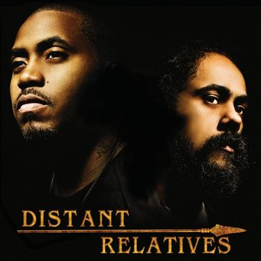
- U.B.R. (Unauthorized Biography of Rakim)
- Take It in Blood
- Nobody (ft. MS. Lauryn Hill) 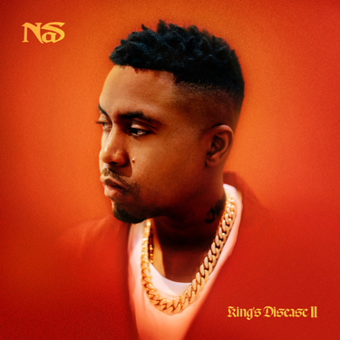
- Michael & Quincy